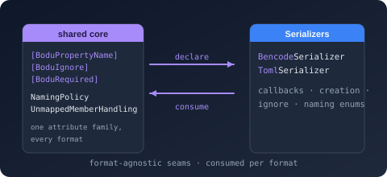

Bodu.Text.Serialization Namespace
- Package
-
Bodu.Text.Serialization 1.0.0

Purpose
Bodu.Text.Serialization is the shared, format-agnostic core of the Bodu text serializers: the attribute family a model declares once, the naming policies, the ignore / object-creation / unmapped-member enums, and the four serialization-callback interfaces. It contains no reader, writer, or serializer - those live in the six packages that reference it: Bodu.Text.Bencode, Bodu.Text.Toml, and Bodu.Text.Yaml (which additionally compile this package's shared metadata resolver and converter engine under a per-format symbol), and the line formats Bodu.Text.Delimited, Bodu.Text.DotEnv, and Bodu.Text.Ini (which read the attributes, naming policy, and callbacks through their own string-wire binders). Depends on Bodu.Core only, so a model or contracts assembly can reference it without taking a dependency on any wire format.
Static documentation
- Bodu.Text.Serialization introduction - the attribute family, naming policies, behavior enums, callbacks, and which serializers honor which parts.
- Bodu.Text.Serialization core concepts - attribute-versus-options precedence, naming-policy order, required members and constructor binding, extension data, unmapped members, callback order, options freezing and thread safety, converter resolution.
- Bodu.Text.Serialization getting started - install, one DTO serialized by TOML and YAML, a callback, a naming policy.
- Bodu serializers and the line formats - the two families that consume this package.
Key types
Attribute family (every attribute derives from the abstract base)
- SerializationAttribute - abstract base that lets the family be discovered as a unit.
- PropertyNameAttribute - pins a member's wire key, overriding the CLR name and any naming policy.
- IgnoreAttribute - excludes a member unconditionally or under an IgnoreCondition.
- IncludeAttribute - binds non-public accessors and surfaces public fields regardless of
IncludeFields. - PropertyOrderAttribute - relative write order (ascending; unannotated members are
0). - RequiredAttribute - deserialization fails when the key is absent (same effect as C#
required). - ConverterAttribute - names the converter type for a member or a type.
- ExtensionDataAttribute - the single dictionary-shaped member that captures unmapped keys.
- ConstructorAttribute - selects the deserialization constructor when several are declared.
- NamingPolicyAttribute - applies a KnownNamingPolicy to one type's members.
- UnmappedMemberHandlingAttribute - per-type skip/reject policy for unknown keys.
- ObjectCreationHandlingAttribute - per-member or per-type replace/populate policy for collections.
- StringEnumMemberNameAttribute - the string written for one enumeration member when serialized by name.
Naming policies
- NamingPolicy - abstract base with
ConvertName(string)and the singletonsCamelCase,SnakeCaseLower,SnakeCaseUpper,KebabCaseLower,KebabCaseUpper. - KnownNamingPolicy - names each singleton (plus
Unspecified) for declarative selection.
Behavior enums
- IgnoreCondition -
Never,Always,WhenWritingDefault,WhenWritingNull. - ObjectCreationHandling -
Replace,Populate. - UnmappedMemberHandling -
Skip,Disallow.
Serialization callbacks
- IOnSerializing / IOnSerialized - before / after a value's members are written.
- IOnDeserializing / IOnDeserialized - after construction but before members are assigned / after every member is assigned.
Example
using Bodu.Text.Serialization;
using Bodu.Text.Toml;
using Bodu.Text.Yaml;
[NamingPolicy(KnownNamingPolicy.SnakeCaseLower)]
public sealed class ServiceProfile : IOnDeserialized
{
[Required]
public string DisplayName { get; set; } = "";
[PropertyName("listen-port")]
public int Port { get; set; }
[Ignore(Condition = IgnoreCondition.WhenWritingNull)]
public string? Description { get; set; }
void IOnDeserialized.OnDeserialized()
{
if (Port is < 1 or > 65535)
throw new InvalidOperationException("Port is out of range.");
}
}
var profile = new ServiceProfile { DisplayName = "Billing API", Port = 8080 };
string toml = TomlSerializer.Serialize(profile); // display_name = "Billing API" / listen-port = 8080
string yaml = YamlSerializer.Serialize(profile); // display_name: Billing API / listen-port: 8080
Notes
- Closest wins. A member attribute beats a type attribute, which beats the serializer options - the same rule for naming, ignore conditions, converters, object creation, and unmapped-member handling.
- Two consumption modes. Bencode, TOML, and YAML honor the whole family through the shared converter engine; Delimited, DotEnv, and INI honor
[PropertyName],[Ignore],[PropertyOrder],[Required](INI and DotEnv), the options-level naming policy, and the callbacks, and convert scalars with the invariant culture. - No number handling here. Numeric representation is a per-format option; this package carries nothing format-specific.
- See also: the serializer guides hub and the line-format guides.
Classes
- ConstructorAttribute
Marks the constructor the serializer uses to instantiate a type during deserialization, resolving the ambiguity when a type declares more than one constructor.
- ConverterAttribute
Specifies the converter to use for a property, field, or type, taking precedence over the converters configured on the serializer options.
- ExtensionDataAttribute
Designates a property or field that captures dictionary entries which do not map to any other member during deserialization, and whose entries are written back out during serialization.
- IgnoreAttribute
Excludes a property or field from serialization, either unconditionally or under the condition given by Condition.
- IncludeAttribute
Forces a member to participate in serialization: a property's non-public accessors are bound (allowing members such as
{ get; private set; }or{ get; init; }with a non-public setter to be read and written), and a public field is surfaced even when the serializer options'IncludeFieldssetting is disabled.
- NamingPolicy
Determines how a member's CLR name is translated to the key used in serialized output, exposing the common casing conventions as ready-made policies.
- NamingPolicyAttribute
Specifies the NamingPolicy applied to the annotated type's members, overriding the serializer-wide property naming policy for that type.
- ObjectCreationHandlingAttribute
Specifies, for the annotated type or member, whether the serializer replaces the value with a freshly created instance or populates the value already held during deserialization, overriding the serializer-wide preferred object-creation handling.
- PropertyNameAttribute
Specifies the key used for a property or field when it is serialized, overriding the member's CLR name and any configured naming policy.
- PropertyOrderAttribute
Specifies the relative order in which a property or field is written, allowing the order members are emitted to the writer to differ from the order in which they are declared.
- RequiredAttribute
Marks a property or field as required, so deserialization fails when the corresponding key is absent from the input.
- SerializationAttribute
Serves as the base class for the attributes that customize how a type or member is mapped to and from a text format by the serializer.
- StringEnumMemberNameAttribute
Specifies the string name used for an individual enumeration member when the enumeration is serialized by name, overriding both the member's CLR name and any naming policy applied to the enumeration.
- UnmappedMemberHandlingAttribute
Specifies, for the annotated type, how the serializer treats a dictionary key that maps to no member during deserialization, overriding the serializer-wide unmapped-member handling.
Interfaces
- IOnDeserialized
Defines a callback that the serializer invokes on a value immediately after all of its members have been populated from the input, letting the value validate or finalize its state.
- IOnDeserializing
Defines a callback that the serializer invokes on a freshly constructed value immediately before its members are populated from the input, letting the value initialize default state.
- IOnSerialized
Defines a callback that the serializer invokes on a value immediately after its members have been written, letting the value restore or release any state prepared for serialization.
- IOnSerializing
Defines a callback that the serializer invokes on a value immediately before its members are written, letting the value prepare its state for serialization.
Enums
- IgnoreCondition
Specifies the condition under which a member is excluded from serialization, whether through IgnoreAttribute on the member or through the serializer-wide default ignore condition.
- KnownNamingPolicy
Identifies one of the built-in NamingPolicy singletons by name, so a type can select a naming policy declaratively through NamingPolicyAttribute.
- ObjectCreationHandling
Specifies whether the serializer replaces a member's value with a freshly created instance or populates the value already held by the member during deserialization.
- UnmappedMemberHandling
Specifies how the serializer treats a dictionary key that maps to no member of the target type during deserialization.